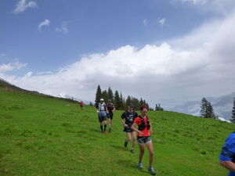

Alpinrunner
2.Training Trail Run Chur
2. Training auf der Strecke Trail Run Chur
Trainingslauf auf der Strecke des Trail Run Chur, der zum dritten Mal am 14. Juni statt findet.
Treffpunkt: 9.00 Uhr Alexanderplaz, Chur
Strecke: LANGA von Chur nach Brambrüesch, weiter über Dreibündenstein nach Brambrüesch, Wahlweise kann auch der UFFA oder OBA gelaufen werden. Treffpunkt für die Strecke OBA 11.00 Uhr Brambrüesch bei der Bergbaiz
Wir laufen in Gruppen nach Stärkeklassen, komm auch mit

Mitläufer können sich hier melden
Dieses Formular läuft weiterhin auf der bestehenden Website von alpinrunner.ch.
Zum Formular